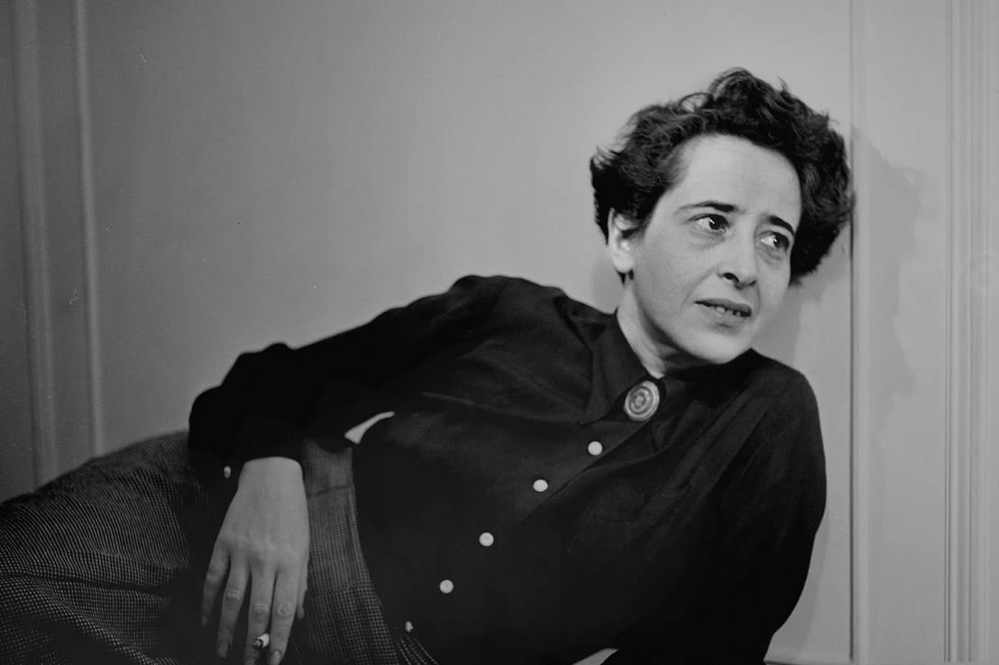

The Glow of what could be: Hannah Arendt, Love and Saint Augustine
This translation was originally published 28 September 2022

copyright: Fred Stein Archive/Archive Photos/Getty Images
Translated by Sarah Fayed
Written by Ismail Fayed
This essay was originally published in Arabic, in Manshoor, 8 March 2018
2013
It was during a visit to a dear friend in Brussels, at a time when I was attempting to create a space for myself, a space through which I can come to terms with what needs to be done against all these shadows of self-doubt and the general sense of urgency to act or express an honest stance about one's-self and one's relation to others, two years after the revolution.
My friend herself had just passed through the life-changing experience of a 'career-shift'; from a critic and a dramaturg of contemporary dance to a director and performer who uses sound as a key vehicle for self-expression. She once wrote to me describing how thoughts manifest themselves in her mind lacking the vibrancy of words or sound, and so she decided to change that by attempting to perform and direct herself.
In Brussels, it is often the case that I feel a strange sense of familiarity because of the lively and very visible Arabic presence (I almost only speak Arabic in public). However, this is juxtaposed with the sense of dissonance in time; it is as if the city was hit with modernity in a sudden, uneven way, for it still maintains little pockets of medieval sensibility in architecture combined with the usual postmodern buildings made of glass and steel. It also retains the European Union's headquarters with all its bureaucracy intact. The city then evokes both nostalgias for times long past and alienation from the present.
During the visit, another friend invited us over for dinner, also a performer and director herself, and the conversation led to my ability to 'read' Tarot cards as a means to look into the unconscious (as Carl Jung would to say) and not necessarily as a way to "reveal the unknown". My friend then handed me a set of cards, which she shuffled, and I asked her: "What's on your mind?" she responded that she is wondering about love.
I strived, through my tarot reading, to provide her with an impartial answer, and to render this symbolic representation in a rational, socially aware manner; however, my friend remained unconvinced with my attempts."Forget about the cards, what does love mean to you? What does love reveal to you about yourself and those around you?"
Knowing that her question was not one for gossip or entertainment, I was still rather surprised by its directness. The question probably derives from her strong conviction that love is at the heart of all our attempts to construe and define our relationships with others, she is, perhaps, deliberately combining personal concerns with public ones. It was beyond me to provide her with an answer, since I am not sure about how to express what love reveals to me about myself or others.
I did not see the revolution as an attempt to present "love" as an ideal to reimagine the social and the society we strive to live in. Personally, what I learned of "love" were mostly heavy, painful truths that continue to weigh me down, whether it is the unthinkable notion of love in a society like ours, or the impossible existence of a person who could be our "four walls" in Hannah Arendt's words.
I became quiet and was unable to articulate an answer. My friend was shocked and pitied me at the same time. There I was, the Arab who belongs to a culture that celebrated love and had it as the main reservoir of its poetic and symbolic imaginary, unable to impart much knowledge about it.
1924
Arendt came to the University of Marburg to study philosophy and, while there, attended one of Martin Heidegger's philosophy lectures. Heidegger captured a lot of interest because of his unique personality and powerful presence; it was said that his grasp and understanding of Greek philosophy were like no other. In Arendt's words, no one read or will ever read Greek philosophy the way he did.
Heidegger and Arendt fell in love shortly after a series of lectures covering The Sophist by Plato. Later, after having her come to his office at one point, he sent her this letter: "Dear Miss Arendt, I must come to see you this evening and speak to your heart".
Heidegger, who was 35 years old at the time, was married and had two children. Arendt, on the other hand, was a Jewish 18-year-old girl who came from a secular, assimilated family. Heidegger was charmed by this brilliant student who was also eloquent and poetically gifted, Arendt is said to have memorized most German and Greek poetry by heart, and it was this poetic inclination that drew them to each other.
According to Heidegger, philosophy had diverged from the concept of discovery in favour of metaphysical and logical consideration of thought. Conversely, Western philosophy in its earlier formative stages, pre-Socratic that is, relied on wandering in nature as its initial and chief method to understand being-in-the-world without much concern with developing formal theories. This is what Heidegger considered to be the closest to "true existence" or in his words Dasein (roughly translated to being there), similarly, this is also closest to the state created by poetry.
Heidegger once wrote to Arendt, after they stood together in the rain for a while, "You are more beautiful and magnificent like this. How I wish we could continue roaming together through the night forever".
2005
After I graduated from college, I worked as a research assistant with a meagre salary and a grim view of the future, which is of course the expected destiny of anyone who studies the social sciences, humanities, or literature under Late Capitalism and with the constant trivialization of such kind of knowledge. I had graduated and got my bachelor's degree, but I still had no idea about what I should do, considering the nature of the job market at the time. I did not even consider it possible with these obstacles and, with the context of a traditional and slightly conservative family in mind, to take up writing professionally or writing as a job. I simply continued to write, in a way that was childish and subjective. Writing to understand and examine the world around me was never too far.
In fact, I used to write long letters to my friends and imagine that I am somehow gathering pieces of myself and putting them together in a manner very much similar to Woolf, Eliot, and Brontës. For they too wrote in private, personal, and intimate spaces. I even tried getting out of this private space and started writing a blog (yes, for that was the golden age of blogs). I just did not know how to write outside this space, this private and very personal space. I was just happy to write, but it stayed trapped in this confined mode, shrouded by shadows of doubt and inexperience.
In that same year, and in the randomness of cyberspace, I sent a message to one of my former lovers. He disappeared a while back and there were a lot of rumours going around about his "vanishing act", and his shunning of our circles. You see at times of ennui and a sense of purposelessness, there is a constant need to connect to anyone who knows us or anyone who claims to be familiar with our innermost thoughts, and in some instances, this need becomes almost compulsive.
I sent him a message, knowing well that he might not respond; I still did it anyway as an act of defiance and in an attempt to defy people's expectation of me. I say this because our relationship did not end in a way that allows for any form of social niceties. Staying true to character, he defied all my expectations and responded. We continued to send short, concise, and somewhat enigmatic messages to each other. He refused to explain anything about his previous whereabouts until we finally agreed to meet so that he can reveal "the truth".
I cannot deny that there was a slew of emotions, including excitement, hopefulness, and anxiety towards the whole "revealing the truth" act. And though I felt naïve and silly, I still came up with countless grand scenarios where the two of us finally reunite. Every time I thought about this possible encounter, I experienced alternating feelings of ecstasy and despair, knowing the certainty of our parting. I felt like this is true madness.
The big reveal was not at all what I expected. The "truth" was not eye-opening or even remotely interesting. It was simply the expected outcome of a spoiled bourgeois boy who became yet another victim of the Islamic Revival Movement and its recent wave that hit Egyptian upper-middle-class families in the early 2000s. Something that does not inspire much thought, but rather was a boring, expected outcome.
I was not at all moved by his extolling of the inner peace he found in "finding God". I did not rejoice in the fact that he abandoned his bourgeois indulgences with their cynical, nihilistic bent, nor his bohemian avarice, which both fascinated and repulsed me. Who isn't fascinated by bourgeois consumerist gluttony? I did not compliment his irrefutable logic, nor his belated wisdom. On the contrary, I despised his naïveté and his succumbing to the illusion of "identity" and the lacklustre, shallow view of religion that he adopted. A misguided view that is shared by most segments of the middle class.
I told him that he has always been singular and selfish, but that he at least knew how to experience different forms of pleasure, for seeking pleasure, does have its merits. But, "what remains of you now?", I asked.
He found it astounding that I didn't kneel in awe over his newly adopted path to enlightenment, and so he resorted to his usual old technique of using my insecurities against me, and the lack of faith in the possibility of a same-sex, long-term relationship under such dreary circumstances, to confuse me and make me question myself. I did falter for a moment, and I questioned myself over doubting his spiritual journey; however, I soon felt sick of this despicable model of religiosity which substituted one consumerist model for another, so in lieu of the pursuit of bohemian pleasures there are charity and preaching (Da'wa) to pursue. Furthermore, in lieu of a conservative, misogynistic patriarchal model, an even fiercer more regressive model that viciously resists any kind of freedom and progressive politics.
I then took it upon myself to, once and for all, show him how this poor excuse for a religious view, which was enforced by the waves of Islamization since the 70s in Egypt, is quite miserable. For it condemns its followers, specifically those inclined to think for themselves, to shallow views that cannot come close to any clear holistic interpretation of religion. So what do the Islamists know aside from moral authoritarianism and an incredibly superficial totalitarian-ritual based notion of religion?
I decided to write a long letter about all of the possibilities, states, and alterations that love leads to. I started writing all that came to my mind; ideas, images, thoughts and about all the moments we spent together. Snippets of music, poetry, and literature were also gathered, and I wrote several quotations including these impressions on small notes, which I numbered and then labelled according to a theme: "longing", "forgetfulness", and "encounter" to name a few. It took me weeks of meticulous work, to weave that web of 'references', and I had to turn our dining room into my own sanctuary that was filled with books and anthologies thrown all around. I obsessively collected them, as if this will be my last chance to ever read or write again.
I tried to document this history and recreate how it might have captured this elusive state of being. I finished this experiment, writing about what I understood and knew of love up till that moment. I realize now, what I was trying to do was to prove that love can engender that state of wonder and fascination with everything that is beautiful and inspiring in the world. And the way love reconstructs our relationship with our surroundings even within a setting that does not acknowledge or accept this love, and that consistently rejects its existence. I wanted to prove to him and myself foremost that I believe in and hold dear, that all this beauty, all this knowledge is not a product of erroneous impressions or sinful notions as he would like to say.
But I forgot what I wrote or rather no longer remember what I wrote or what I was trying to persuade him with. All that I remember is that he told me later that he should not allow himself to be moved by my thoughts or feelings because he is a married man and has an undeniable moral duty. He said he would pray for me to find the right path.
401
Saint Augustine arrived in Rome in 383 while searching for better teaching opportunities. He finally did get hired as a professor of Rhetoric, and in an attempt to improve his social status and due to the influence of his mother Saint Monica, he had to end his relationship with his mistress. All that is known about her is that she is the mother of his only child and that she stayed with him for 13 years; she was also known as "The unknown woman of North Africa".
Augustine's mother thought that extramarital relations with a person of a different social class will undermine Augustine's chances of rising in social circles and would also interfere with his path to righteous faith.
For some mysterious reason, almost all of Augustine's works seem to have survived and has been well-preserved. Most historians and researchers unanimously agree that the works we have now are actually his.
Could it be that Augustine's experience is the basis for the notion of "longing for the transient"? And the ending of this relationship was an attempt by Augustine in reinforcing the notion that "longing" by nature is seeking to be one with the beloved? And if the world ends in a fleeting moment, does this mean that love will continue to stray from the notion of rejoicing in everlasting togetherness?
Augustine resigned from his post and right before going back to his birthplace Thagaste (now Souk Ahras, Algeria), the vision his mother saw was somehow fulfilled. Saint Monica had a vision where she wept to Saint Ambrose of Milan, and he reassured her, stating that "the son of these tears will not perish". And so, in a scene resembling Jesus' Suffering in the Garden of Gethsemane, Augustine decided to convert to Christianity. In a garden in Milan where he meditated and after hearing a child asking him to "hold on to this and read"! Augustine then opened the Bible and was met with these verses from Romans (13:13-14:00) "Let us behave decently, as in the daytime, not in carousing and drunkenness, not in sexual immorality and debauchery, not in dissension and jealousy. Rather, clothe yourselves with the Lord Jesus Christ, and do not think about how to gratify the desires of the flesh".
Augustine was baptized by Saint Ambrose in Milan, in fulfilment of Saint Monica's prophecy. She passed away shortly after that and was buried in northern Italy. Augustine then went back to Thagaste and was kept busy raising his only child. Later, his child passes away and he gets ordained as a priest in Hippo Regius (now Annaba), in Algeria in 391. He then embarks on a journey of writing one of his most profound works, the masterpiece, Confessions, which can be considered the first Western Christian autobiography ever written. It outlines the journey of the "soul" as it navigates in a materialistic world ruled by the senses, and how it will only rest and truly believe when it is reunited its creator. Augustine's title is based on the Psalms of David, and so it begins with "For Thou hast made us for Thyself and our hearts are restless till they rest in Thee".
2016
My father passed away on the 14th of April. His respiratory system failed him after 3 years of losing battles with numerous ailments and just 8 days short of his 67th birthday. He was an avid smoker up until eight years of his passing; and although he was a doctor, he still led a very unhealthy lifestyle that his body never forgave him for.
My father's decision to isolate himself like the "companions of the cave", to shield himself from all the misery and suffering of the outside world, staying in his room for years on end. That self-imposed, isolation was the grounds for our turbulent, troubled relationship.
His quixotic battles with the world, which cost him everything, were by no means fair nor on equal footing. The amount of unjustness was hardly tolerable; my grandfather passed away when my father was just 18, his Ph.D. was withheld for five years without a plausible reason, and he was forced to come back to Egypt and leave behind a job he truly enjoyed, and the list goes on. And in spite of all of this, I could not forget nor forgive his silence and the emptiness he left behind.
When he was hospitalized, the question of what to do when a loved one is sick loomed over me. And if that relationship is void of love, then what is left to do or say?
Since I did not conform to middle-class morality concerning proper social behaviour, I incurred the wrath of my entire family. I maintained that "dutifulness" comes before love and that only God can remember and still forgive; humans, however, are a different story because they are plagued with memories. Memories shape how they deal with each other, and they will always be destined to have the perpetual need to see themselves as they encounter others. Maybe this is the origin of "know" (litaAAarafoo- لِتَعَارَفُوا to know each other, to witness)? Yet, all that is left in my memories is the vanishing and the silence that permeated most of our times together, me and him, as we were bounded in the same space.
The silence went on... And then my father fell sick and exposed to us the fragility of our bodies when they are afflicted, only to become a sorrowful, flimsy, miserable thing. His vital measurements with their minute details became all that we saw and all that we cared about. We no longer saw a person, but rather hundreds of possibilities of the failure of a sick body.
I tried to negotiate this silence and distance that numbed some of those turbulent feelings, and I decided that empathizing with someone because they are sick does not necessarily entail forgiveness. I was able to see him several times before he passed, but every time I was overwhelmed with the same contention playing in mind, and so I had to reassure myself that I did not succumb to unfair norms or forgive the suffering caused by the silence and ambivalence.
I kept repeating this to myself, "forgiveness does not entail absolving someone from their wrongdoing. It simply acknowledges the fact that someone actually made a mistake". Our shared belief that this person can be any one of us and that their wrongdoing does not define them, and that we acknowledge that they might be able to do the right thing. It is probably this desire to do what is right and good that is the reason for forgiveness, not that the wrong done is disregarded or forgotten.
2018
I couldn't wait to read Arendt's dissertation; my curiosity to read that defining work outshone all historical facts, Arendt's other works, and a true objective critique of the dissertation itself.
My imagination ran wild in picturing what she wrote and why she wrote it, and how was all this connected to her relationship with Martin Heidegger? I start my own narrative of what might have happened, where the reason Arendt chose the concept of love by Saint Augustine is that she failed to be the brilliant, smart, and cherished student and was rather an "outsider" in her relationship with Heidegger. Saint Augustine, being one of the founders of the Latin Church and one of Heidegger's important sources for understanding the idea of the "future" and the "destiny of man" in a world of his own making, was chosen and read by Arendt in a way that may be rivals her teacher and in some instances she does surpass him.
All of this, however, is my attempt at interpreting their relationship, since I do not know what happened historically in 1927 when Arendt actually started writing her dissertation. What can be presumed about her dissertation is that it aimed at more than just a close reading of Christian theology and it is rather a pre-theological in reading of Augustine. Arendt did make it clear that she has no interest in writing about Saint Augustine from a theological point of view. So then why Augustine? And why love?
Arendt never referred to Augustine again after finishing her dissertation. The absence of all her extended research into his works was quite glaring in her subsequent work except for minor mentions. Surprisingly, the only time the dissertation was intended for publishing, Arendt provided a less than adequate translation, as per Arendt's students, and it was never again to be seen until she passed away, and her students published it in 1995. But without doubt there are allusions in Arendt's text that prefigure her subsequent interests, and what she tried to write about in different ways and interpretations, that is: the "other" and what drives our relationship to them.
2016
"Despite knowing the journey and where it leads, I embrace it, and I welcome every moment of it". -Dr. Louise Banks (Amy Adams), Arrival
Adams's performance as Louise Banks garnered widespread critical acclaim. In the film, she is a linguist who is attempting to decode a language used by extraterrestrial beings that "arrive" at the beginning of the film. Eventually, she learns that their language does not have a concept or sense of time, for there was no clear direction for time from beginning to end. Learning this language then is an attempt at defying the concept of time as a linear construct; the film employs the Sapir-Whorf hypothesis, where the structure of a language determines a native speaker's perception and categorization of experience.
"Language is the first thing that saves us from the desolateness of existence".—Saint Augustine's Confessions.
Wonderful as it was to transcend the bounds of time, Banks discovers that she will give birth to a daughter who will subsequently develop a terminal illness and pass away, and in an Augustinian twist, Banks states that she chooses to have her daughter knowing that she will eventually lose her. Simply, because her joy in being with her, even if for a short time, far surpasses the pain of losing her.
1940
"I can only truly exist in love. And that is why I was so frightened that I might simply get lost. And so I made myself independent. And about the love of others who branded me coldhearted, I always thought: If you only knew how dangerous love would be for me. And when I met you, suddenly I was no longer afraid—after that first fright, which was just a childish fright pretending to be grown up. It still seems incredible to me that I managed to get both things, the 'love of my life' and a oneness with myself. And yet, I only got the one thing when I got the other. But finally I also know what happiness is". Hannah Arendt to her husband Heinrich Blücher.
2018
Arendt's dissertation about Saint Augustine showcases a lot about "Caritas" or a "Christian's love of fellow Christians" and little about "love" as we have come to know it. "Caritas" is the Latin root for "charite" or "charity", which simply means affection or action of good will. Here the term is more concerned with the Christian aspect rather than the dictionary meaning, so more about loving others.
Augustine sees it as follows; "Charity is a virtue which, when our affections are perfectly ordered, unites us to God, for by it we love him". Since all mankind share the same origin and were formed from dust, each, and every one of them becomes the beginning or the initiation of a new world.
Augustine tried to create a Christian ethics built on the notion of love. He belonged to a transitional phase between classic philosophy of Antiquity and the evolution of Christian thought, and so was influenced by Neoplatonism and its successive spawned movements. Hence, he found that the concept of "knowledge" does not lead to absolute happiness, as the Platonists and the Stoics preached. As we are creatures made ex nihilo, we are unable to grasp God through investigation or knowledge, as the Platonists claimed.
Through a selective reading and an unconventional interpretation of Augustine's work, Arendt tries to reformulate his ideas within a conceptual framework that allows for understanding the human condition and how humans function as part of the world, through love.
To achieve this, Arendt traces three key concepts in Augustine's writing about the human soul.
1. "Initium ergo ut esset, creatus est homo"– "that there be a beginning, man was created"
2. Loving your neighbour as in "Love the Lord your God with all your heart and with all your soul and with all your strength and with all your mind'; and, 'Love your neighbour as yourself.'" (Luke 10:27).
3. "Caritas" state before the fall, loving God and loving each other and being immortal and in no need of salvation.
Augustine states that man was created from nothing, conversely, this creation is not a manifestation of the One. For readers of Arabic, this has its echoes in Sufism to a great extent. And because man was created from nothing, there was nothing before him, and so creating mankind becomes the "beginning" or the start of a new world. And so creation, and the ability to start a new, becomes a defining feature of man. And that moment, the moment of creation, becomes the moment of potential immortality that never was, but that can be (once man dies). In between those two moments, is the eternal present, in which man strives, based on his memory, to grasp what wasn't and to long and to imagine what might be, to create a transient world in order to reach eternity.
All mankind share the same origin story, or creation story, being created from nothing, and each one of them is then "the beginning", or starting the world anew. And being destined to mortality, they are collectively in a state of eternal longing to go back to their origin, the moment they transcend this mortality.
Contrary to ancient philosophy, Augustine reformulated the idea of loving others through the first commandment, so that we may realize that we are all equal in God's eyes, and in origin, and in the end. Once we realize that, we become worthy of this love, and the human deficiency that always strives to find perfection, becomes our true path to true love, God's love, through which we create the human world. Arendt here adds through "loving others".
The infinite present or what could be
The theme of "memory", which Arendt borrowed from Augustine, persisted in her subsequent writing. People can easily remember what was before and what happened, and they can also aspire to the future, it could be said that this runs parallel to their ability to realize their wills.
Arendt saw that notion in the form that she labelled the "infinite present"; it operates throughout regular tracks of time. In her analysis of Augustine's work, Arendt sought to surpass her professor and former lover Heidegger in defining "being/existence", she moves beyond the death on both ends of existence, which reflects the nihilistic view adopted by Heidegger and attempted to redeem "existence" from this by stating that "love" and "desire" are mere pursuits of a future that has not come to be. Hence, in a perpetual state of coveting this possibility or attaining these desires or this love, we all are equals.
Arendt reminds us of the idea of "community", where everyone maintains the "right to love". This pursuit of love, beyond Augustine's theological edicts, will remain the shared belief that saves us from the desolateness of our impending death or the nihilistic notion of realizing it, according to Arendt.
Mindful as we are of the fact that we are captives of this ephemeral world, beholden to God's grace, evoking idealized scenarios of happiness, and moving towards what we cherish, we must then be grateful to this life and this existence, even if it is plagued with times of despair and anguish, for the present is perpetually dazzling with the glow of what could be.